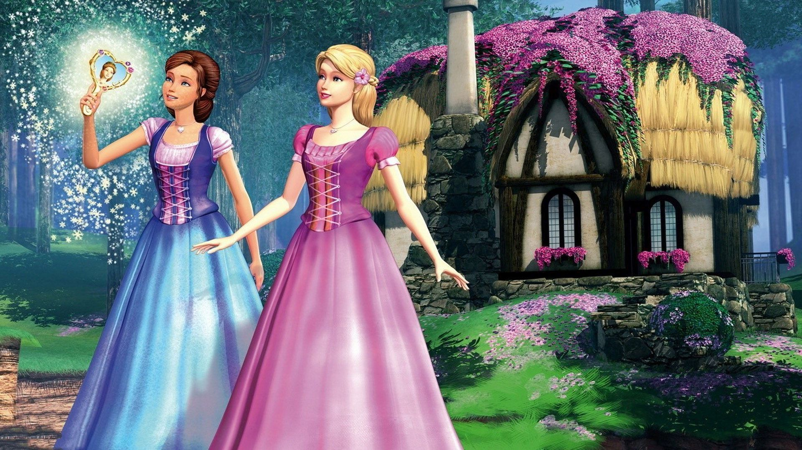

FICHA DE LA PELÍCULABarbie and the Diamond Castle
✦ AÑO: 2008 ✦ DURACIÓN: 79 min ✦ PAÍS: ✦ DIRECTOR: Gino Nichele ✦ GUIONISTAS: Elana Lesser, Cliff Ruby ✦ MÚSICA: Arnie Roth ✦ GÉNERO: Animación. Fantástico. Infantil |
Liana (Barbie) y Alexa (Teresa), vivían en una humilde cabaña del bosque. Eran dos grandes amigas que compartían todo, incluso su pasión por la música. Un día, su vida cambió en el momento que una anciana a la que alimentan les da un espejo que en realidad es el escondite de Melody, una aprendiz de musa que huye de la malvada Lydia.
Junto a Melody se encuentra la llave del Castillo de Diamantes, su hogar y el lugar de donde nace toda la música, por lo que si Lydia lo encuentra, la música morirá para siempre y, por consiguiente, el mundo. Las tres juntas se embarcarán en un viaje para encontrar el Castillo de Diamantes y devolver la paz a Melody y el resto de musas.
Para salvar a su nueva amiga, Liana y Alexa se adentran en un peligroso viaje al Castillo de Diamantes que pondrá su amistad a prueba. Pero la fuerza de la música y la compañía de dos adorables perritos hará que las chicas afronten juntan los problemas y aprendan el verdadero valor de la amistad.

FICHA DE LA PELÍCULABarbie and the Diamond Castle
✦ AÑO: 2008 ✦ DURACIÓN: 79 min ✦ PAÍS: ✦ DIRECTOR: Gino Nichele ✦ GUIONISTAS: Elana Lesser, Cliff Ruby ✦ MÚSICA: Arnie Roth ✦ GÉNERO: Animación. Fantástico. Infantil |